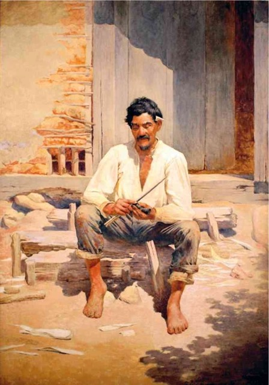
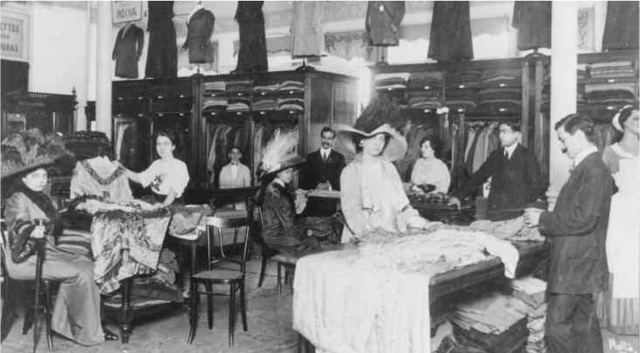

Pré-Modernismo
Literatura brasileira do início do século XX
Para começar

- Na pintura acima, Caipira picando fumo, o artista Almeida Júnior (1850-1899) procurou elaborar uma representação realista do homem do campo. Faça a leitura da imagem e indique os elementos responsáveis por criar essa impres- são de realismo.
A literatura brasileira do início do século XX na História
O contexto social do início do século XX no Brasil foi marcado pela afirmação da chamada República Velha (1894-1930) e pelo clima de otimismo que caracte- rizou a Belle Époque na então capital do país, a cidade do Rio de Janeiro.
INTERDISCIPLINARIDADE com História do Brasil (República Velha).
No início desse século, a elite de São Paulo e do Rio de Janeiro deslumbrava-se com o estilo de vida de Paris e Londres e queria reproduzir o modo de vida europeu, num cenário urbano que empurrava a população mais pobre para longe do centro da cidade, a fim de dar lugar a largas avenidas e praças que lembrassem o cenário parisiense.

A urbanização, a imigração e a cafeicultura impulsionaram um processo de reformulação na paisagem brasileira, mas não resolveram contradições que permaneceram evidentes, como aponta o estudioso Alfredo Bosi:
O quadro geral da sociedade brasileira dos fins do século vai-se transformando graças a processos de urbanização e à vinda de imigrantes europeus em levas cada vez maiores para o Centro-Sul. Paralelamente, deslocam-se ou marginalizam-se os antigos escravos em vastas áreas do país. Engrossam-se, em consequência, as fileiras da pequena classe média, da classe operária e do subproletariado. Acelera-se ao mesmo tempo o declínio da cul- tura canavieira no Nordeste que não pode competir, nem em capitais, nem em mão de obra, com a ascensão do café paulista.
Um olhar, ainda que rápido, para esse conjunto mostra que deviam separar-se cada vez mais os polos da vida pública nacional: de um lado, arranjos políticos manejados pelas oligarquias rurais, de outro, os novos estratos socioeconômicos que o poder oficial não representava.
BOSI, Alfredo. História concisa da literatura brasileira. São Paulo: Cultrix, 1985. p. 342.
Diante dessa incapacidade da República recém-proclamada de atender às necessidades que as diferentes regiões do Brasil demandavam, ocorreram levantes populares, como a Revolta da Armada (1893), a Guerra de Canudos (1896-1897), a Revolta da Vacina (1904) e a Revolta da Chibata (1910-1914), que revelavam o descontentamento dos chamados “esquecidos da República”, aqueles que não se sentiam atendidos pelas transformações pelas quais o país passava.
A atenção dos escritores do início do século XX se voltou especialmente para esses “esquecidos”, buscando retratar a realidade brasileira por um viés crítico. Ao mesmo tempo que apresentava um caráter descritivo, essa literatura buscava redimensionar, por meio de um olhar atento e investigativo, um Brasil que abrangia desde o sertanejo nordestino até o interiorano paulista.
A principal referência literária do grande público no início do século XX era a poesia parnasiana. O leitor brasileiro desse período ainda admirava os versos clássicos e uma literatura que incorporava uma visão menos problemática da realidade. No entanto, alguns escritores se destacaram e alcançaram visibilidade justamente por romper com essa expectativa do público.
Em 1940, com a finalidade de nomear essa produção literária das duas primeiras décadas do século XX, o crítico literário Tristão de Athayde criou o termo “pré-modernismo”, que pode ser entendido de duas maneiras distintas e complementares: “pré” é lido tanto como “antes” quanto como “precedência, influência”. Considerando-se essa dupla compreensão, seria uma produção literária produzida antes da Semana de Arte Moderna, marco histórico do Modernismo no Brasil, e, também, anteciparia algumas das características que se consolidaram por aqui como marca desse movimento literário.
A literatura chamada “pré-modernista” não pode ser tomada como uma escola literária, pois apresenta individualidades, e não um estilo de época. Entre- tanto, é possível identificar algumas tendências presentes nas obras dos autores desse período, que podem ser divididas em três grupos.
No primeiro, encontram-se obras de contistas que se voltaram para a investigação do nacional, focalizando regiões específicas do Brasil. São autores representativos desse grupo: o mineiro Afonso Arinos (1868-1916), o gaúcho João Simões Lopes Neto (1865-1916) e os paulistas Valdomiro Silveira (1893-1941) e Monteiro Lobato (1882-1948). O segundo grupo é formado por obras que pro- blematizaram o Brasil republicano, como as do maranhense Graça Aranha (1868-1931) e as do carioca Lima Barreto (1881-1922). No terceiro grupo, destaca-se a obra do carioca Euclides da Cunha (1866-1909). Caso único na literatura brasileira, Os sertões, misto de tratado histórico-geográfico e recriação ficcional, revelou-se o mais completo documento de denúncia do massacre ocorrido na Guerra de Canudos.
Na poesia, tem destaque a obra do paraibano Augusto dos Anjos (1884-1914), cujos poemas desafiam qualquer classificação por fundirem traços naturalistas, parnasianos e simbolistas.